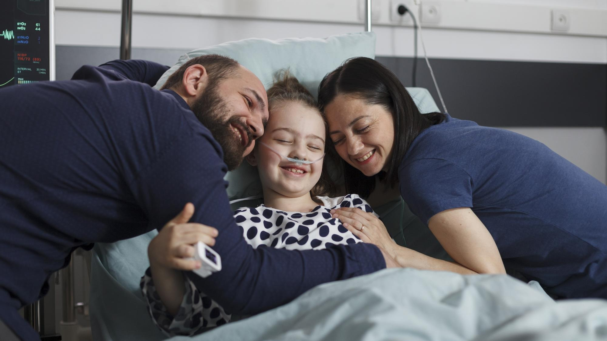
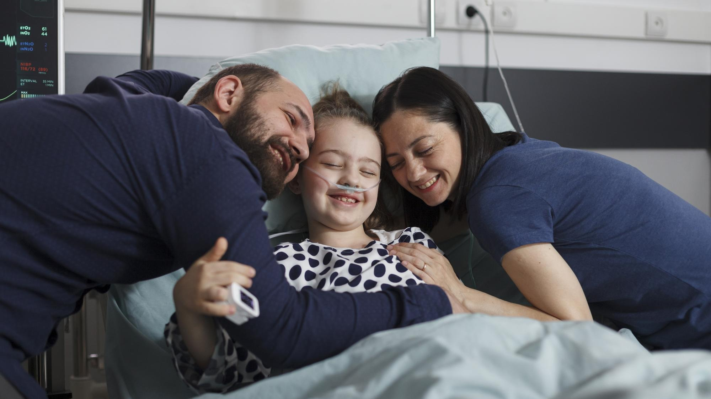

Cuidamos la vida
con dignidad, amor y empatía
En Paliviarte acompañamos cada etapa con atención médica, apoyo emocional y conexión humana, ayudando a pacientes y familias a vivir con calidad y sentido.
Conoce nuestros servicios